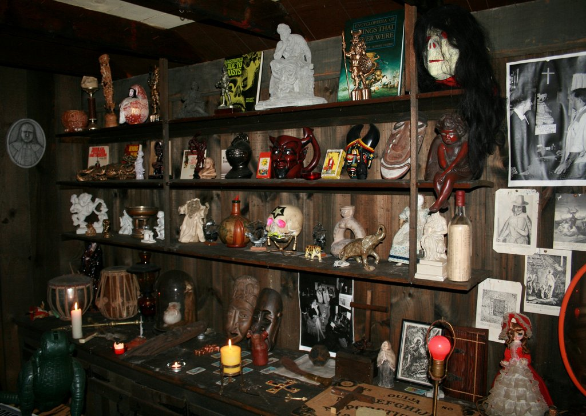

Museo de los warren

El Museo del Ocultismo de los Warren es uno de los lugares más enigmáticos y aterradores del mundo. Fundado por los famosos investigadores paranormales Ed y Lorraine Warren, alberga una colección única de objetos malditos y poseídos, como la muñeca Annabelle, la Silla del Diablo y el Ídolo Satánico. Cada pieza guarda una historia de misterio, tragedia y fenómenos inexplicables que los Warren preservaron para evitar que siguieran causando daño. Este museo no solo es un testimonio de sus investigaciones, sino también un espacio que despierta fascinación y temor en quienes se atreven a conocerlo.